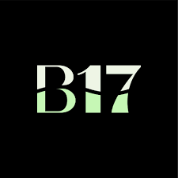
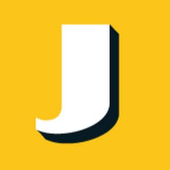

Biography
Currently, I am a Creative Business student at Breda University of Applied Sciences seeking my next opportunity to grow professionally in an innovative company. I am truly passionate about content creation. From ideation to hands-on projects, I ensure that every story is told.
Education
-

BA Creative Business
Breda University of Applied Sciences
Sep 2023 – Present
- Director, Editor, and Sound Designer of Short Documentary Concept Trailer “One More Dance”
- Radio Audition Tape
- HUB Radio solo shows"The Art of Screaming Sad Lyrics", and “Cunt-y Country and Fabulous Folk”
- Speech "Fan Fiction Ban in 2025" TikTok, 55K views, and 16K likes
- Publishing Manager, Graphic Designer, and Fiction Story Editor and Illustrator of magazine "INSIGHT" PORTFOLIO
Professional Experience
-
Florist
Intratuin Koudekerke
October 2021 – Present
- Designed custom floral arrangements for special occasions
- Handled transactions, deliveries, and provided excellent customer service
- Managed inventory and organised displays
-

Waitress
Boulevard 17
March – Nov 2020
-

General Merchandiser
Jumbo Vader
April 2019 – Feb 2020